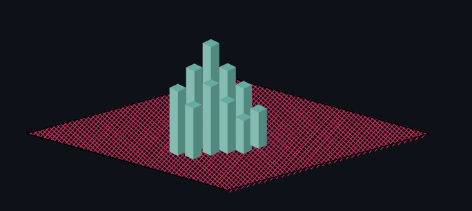
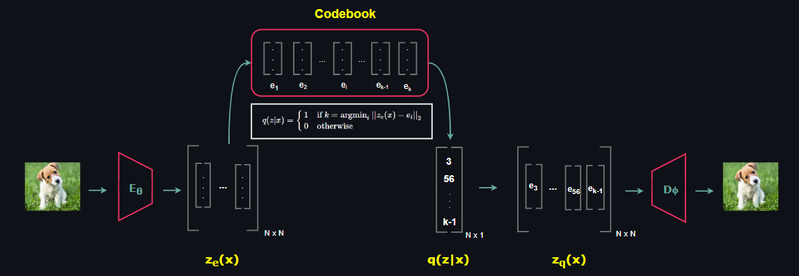

🍁 VQ-VAE date 27.10.2022
Neural Discrete Representation Learning by Hidir Yesiltepe

🍁 Introduction
In this blog post we will explore Vector Quantized Variational Autoencoders that was first published by DeepMind in the paper named Neural Discrete Representation Learning. The model takes its root from Vector Quantization and applies the underlying idea to the encoder network so that it generates discrete latent code rather than continuous. The proposed architecture resembles with memory networks where encoder network extracts the features that are going to be used as an index for the memory (codebook in VQ-VAE terminology).
It is also important to note that, as opposed to traditional VAE architectures in which latent representations are assumed to be Gaussian Normal, VQ-VAE uses a learnt prior. The most obvious reason is that latent representations are not continous in this case but come from a categorical distribution. Nevertheless, we will start our discussion by reviewing Variational Autoencoders. For more detailed information please check out my article on VAEs.
🍁 Variational Autoencoders
Similar to Flow Models and Diffusion Models, Variational Autoencoder (VAE) is a likelihood based latent variable model that learns a mechanism from the given distribution to simulate new data points. VAEs consist of two stochastic components: Encoder and Decoder.

At this point before explaining Encoder and Decoder networks, it is important to mention primary stochastic components that constitutes VAE.
$$ \text{Prior Distribution } p_{\theta}(z)$$
$$ \text{Posterior Distribution } p_{\theta}(z|x)$$
$$ \text{Likelihood } p_{\theta}(x|z)$$
🍁 Prior Distribution
The prior is the distribution on the latent space Z that contains hidden representations z ∈ Zm, which is called latent vector or latent code, of the given datapoints x ∈ Xn . By the construction of VAEs, hidden representations z is assumed to lie on a low-dimensional manifold, i.e the dimensions satisfy m << n. Most importantly, prior distribution can be set fixed to a tractable distribution that we can take samples easily just like in ß-VAE and Conditional VAE or it can be learned just like in VQ-VAE and NVAE. When it is set fixed, the most common choice for prior is the Standard Normal Distribution.

🍁 Posterior Distribution
The posterior is the distribution of latent vectors given observed data. Statistically it is untractable to form p(z|x). We can demonstrate this using Bayes rule as follow:
$$p(z|x) = \frac{p(x|z)p(z)}{p(x)} \tag{1}$$
Since latent variable models model the joint distribution p(x,z) rather than p(x), to obtain denominator we need to marginalize out z:
$$p(x) = \int_{z \in \mathbb{Z}} p(x|z)p(z)dz \tag{2}$$
The above integration is taken in the entire Z space which is often non-tractable (although there are tractable ones such as Probabilistic PCA). The prominent problem is that p(z|x) puts a very low mass to a wide region and high mass to a very restricted region.

As a consequence of this issue, due to curse of dimensionality applying Monte Carlo approximation would not be effective as the dimension of latent space increases. An alternative solution comes from Variational Inference. We are going to introduce a new parameterized distribution q(z) and employ the importance sampling procedure to the above integation. In order to apply Jensen's Inequality, we are going to consider log-likelihood.
$$ ln\hspace{3pt}p(x) = ln \int_{z \in \mathbb{Z}}p(x|z)p(z)dz \tag{3}$$
$$= ln \int_{z \in \mathbb{Z}}\frac{q_{\phi}(z)}{q_{\phi}(z)}p(x|z)p(z)dz \tag{4}$$
$$= ln \hspace{3pt} \mathbb{E}_{z \sim q_{\phi}(z)}\left[\frac{p(x|z)p(z)}{q_{\phi}(z)}\right] \tag{5}$$
Since ln is a concave function, we can form Jensen's Inequality right here:
$$ln\hspace{3pt} p(x)\geq \mathbb{E}_{z \sim q_{\phi}(z)}\hspace{2pt}ln\left[\frac{p(x|z)p(z)}{q_{\phi}(z)}\right] \tag{6}$$
$$= \mathbb{E}_{z \sim q_{\phi}(z)}\hspace{2pt}\left[\hspace{2pt} ln\hspace{2pt}p(x|z)\hspace{2pt}\right] - KL(ln\hspace{2pt}q_{\phi}(z)\hspace{2pt} ||\hspace{2pt} ln\hspace{2pt} p(z))\tag{7}$$
In general amortized version of variational posterior is used since it is extremely useful representation from the Encoder point of view: It takes an observed data and returns the parameter of the distribution that corresponding latent vector belongs to. When we apply this subtle change to the objective we are left with:
$$= \mathbb{E}_{z \sim q_{\phi}(z|x)}\hspace{2pt}\left[\hspace{2pt} ln\hspace{2pt}p(x|z)\hspace{2pt}\right] - KL(ln\hspace{2pt}q_{\phi}(z|x)\hspace{2pt} ||\hspace{2pt} ln\hspace{2pt} p(z))\tag{8}$$
Encoder network will be responsible for outputing parameters of the approximate posterior q(z|x).
🍁 Likelihood
Likelihood models the distribution of x given the latent vector z and it is represented by Decoder network. It is significant to be aware of that Decoder network is also stochastic just like Encoder. As opposed to Encoder output distribution which is Gaussian Normal most of the case, we need to choose Decoder output distribution wisely based on the specific problem at hand.
For example, if we form a network that synthesize a gray scale image such as MNIST, outputing Bernoulli Distribution parameter is a natural choice. On the other hand, if we model:
$$ x \in \{0, 1, ..., 255\}^N $$
Then Categorical Distribution or Logistic Mixture Distribution would be natural choices.
🍁 VQ-VAE Architecture
Vector Quantized VAE is composed of 3 main components: Encoder, Decoder and Codebook. Different than ordinary VAE, Encoder network outputs a latent feature map, in other words multiple latent vectors, rather than a single latent vector. Then the L2 distance between each latent vector belonging to the Encoder output and the latent vectors belonging Codebook is calculated. As a result of this computation, the index of the latent code in the Codebook that resulted in the minimum distance is recorded.

The resultant vector that consists of the indexes of Codebook forms a sample of posterior distribuion q(z|x) over the latent space. Then Decoder takes the collection of multiple Codebook latent vectors that are denoted by the indexes of samples of the posterior q(z|x).